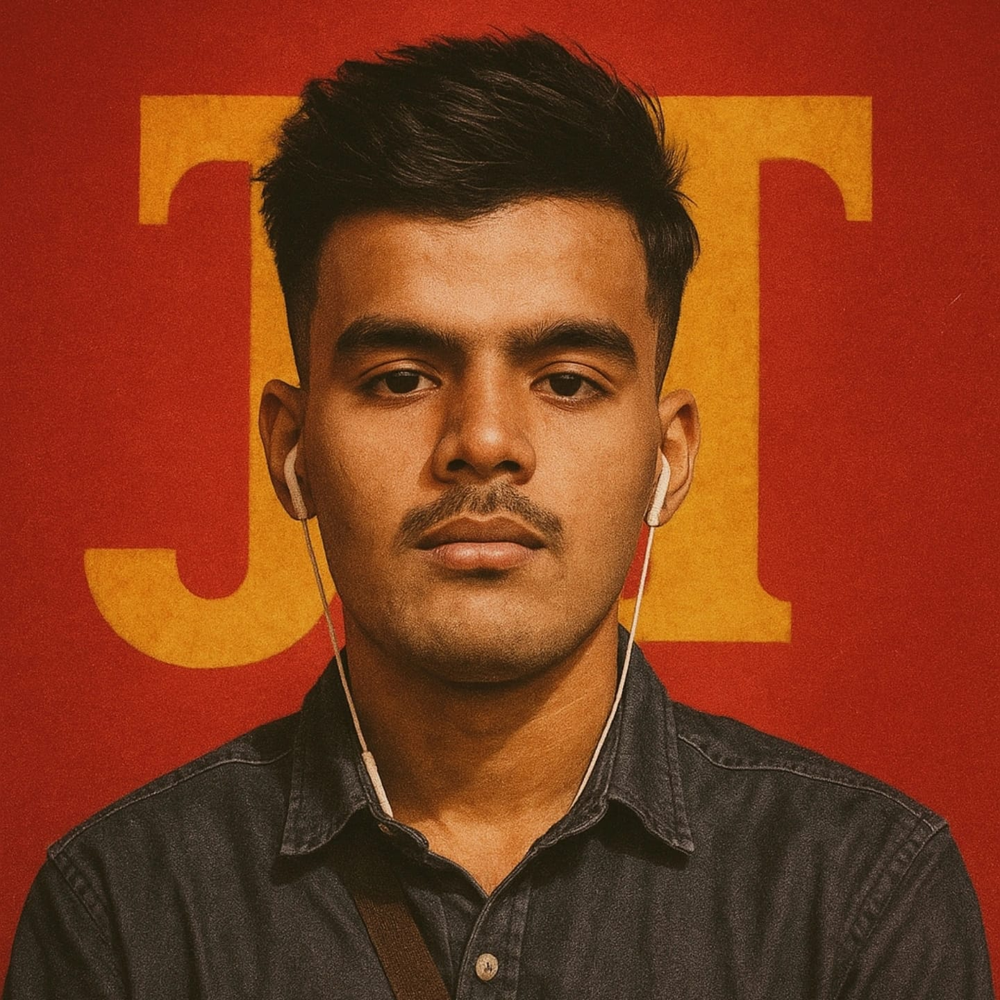
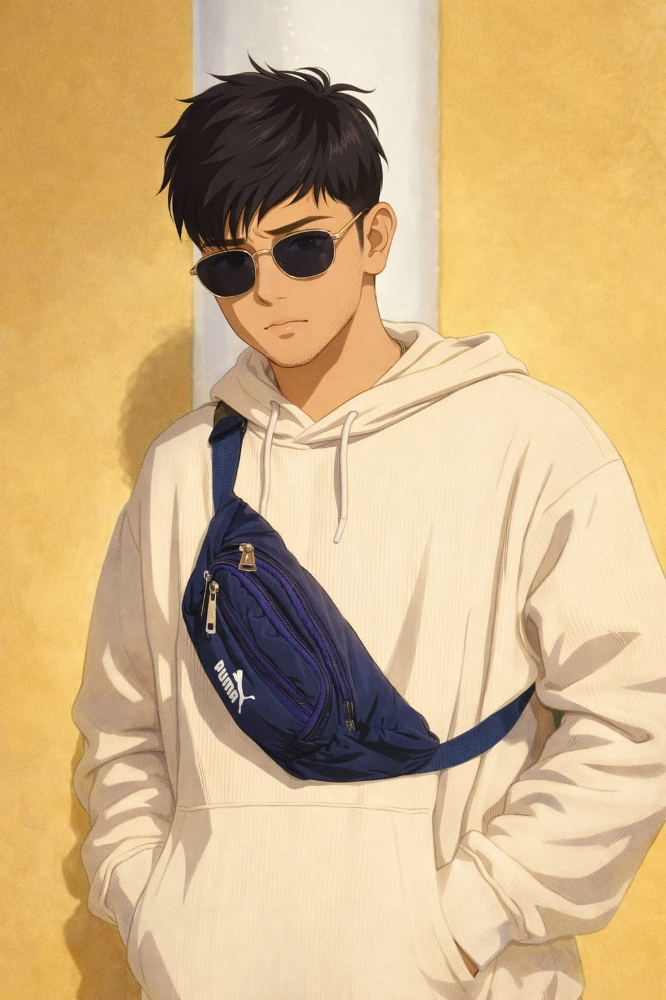
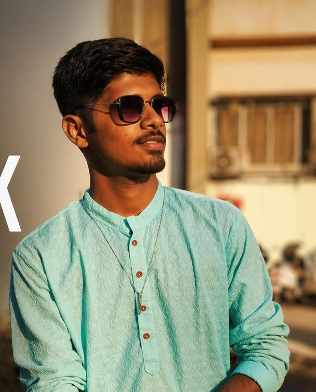

Experience real-time network simulation with advanced routing logic and visual trace analysis.
Everything you need to simulate, understand, and optimize intelligent packet routing in complex networks.
Intuitively place, move, and configure routers on an infinite canvas. Build any network topology you can imagine without writing a single line of code.
Draw connections between routers with automatic topology detection. Build star, ring, mesh, and hybrid network structures visually in seconds.
Side-by-side comparison of Breadth-First Search and Dijkstra's shortest path algorithms. Watch how each algorithm traverses your network in real time.
Assign delay costs, bandwidth limits, and congestion weights to every link. Simulate realistic network conditions with custom edge parameters.
Track hops, total delay, congestion levels, and packet drops in a real-time analytics dashboard. Export logs and performance data instantly.
Watch packets move step-by-step along routing paths with smooth animation. Pause, replay, and step through routing decisions at your own pace.
Networking is hard to understand without visuals.
Most networking courses teach routing algorithms as abstract graph theory with no interactive component. Students struggle to connect formulas to real network behavior.
Existing tools like GNS3 and Packet Tracer are complex, heavy, and designed for professionals — not for learning foundational routing concepts.
Students never see BFS vs Dijkstra on the same topology side-by-side. Our simulator makes algorithm trade-offs visually obvious and instantly understandable.
Perfect for CS and networking students learning graph algorithms, routing protocols, and packet flow. Turns abstract theory into interactive, visual experience.
Researchers can prototype new routing heuristics, test topology efficiency, and model congestion scenarios without building physical lab infrastructure.
Compare how BFS and weighted Dijkstra perform under different edge conditions. Identify bottlenecks, suboptimal paths, and congestion hotspots quickly.
Helps software engineers grasp low-level network behavior for system design interviews, infrastructure planning, and backend architecture decisions.

Simulation Engine · System Design
Graph Algorithms · Frontend Architecture

Routing Logic · BFS/Dijkstra Implementation
Data Structures · Performance Optimization

Network Protocol Design · Academic Research
Logic Conceptualization · Technical Analysis
Academic Supervision · Technical Guidance
Research Direction · Project Review